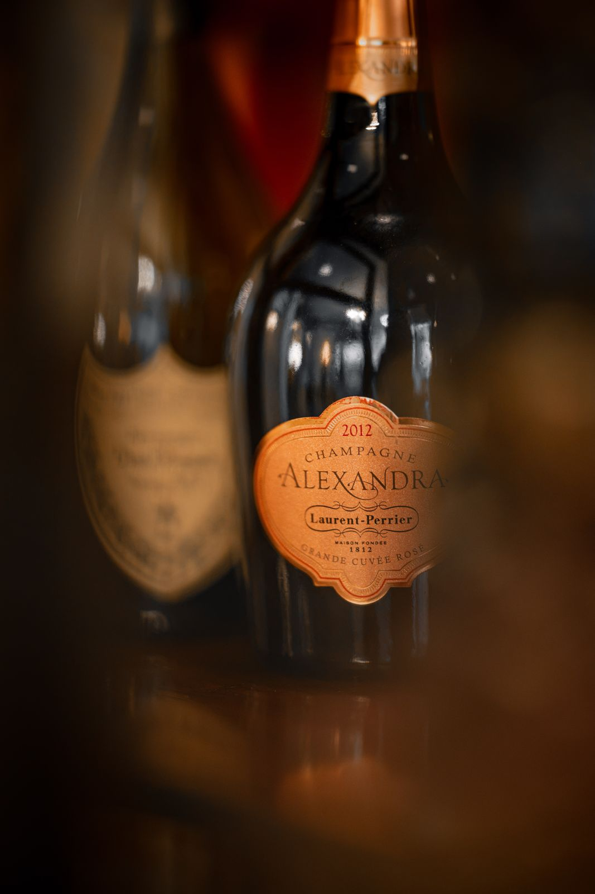
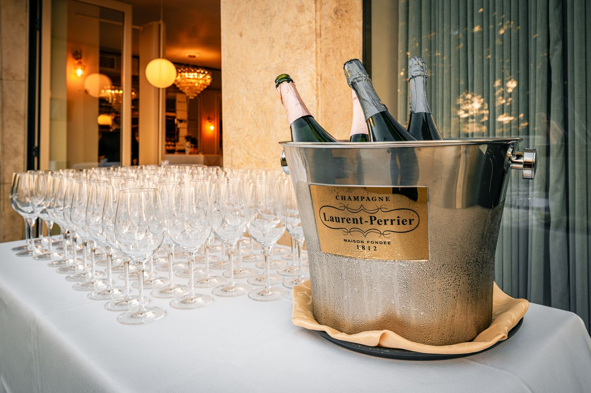

Wein trinken in der Wiener Innenstadt
Ein Glas Grüner Veltliner nach der Arbeit, eine Flasche Brunello zum Steak oder Champagner zum Anstoßen: Unsere Weinkarte reicht von Österreichs besten Lagen über Frankreich und Italien bis nach Kalifornien. Viele Weine gibt es auch glasweise, bis Mitternacht an der Bar.



Offen ausgeschenkt
Grüner Veltliner, Riesling, Gemischter Satz, Sauvignon Blanc, Gelber Muskateller und Chardonnay, dazu Pinot Noir, Rotweincuvées und Rosé. Glasweise ab 7,50 Euro. Champagner gibt es im Glas ab 18 Euro, Crémant ab 7,90 Euro.
Österreich
Grüner Veltliner von Pichler aus der Wachau, Hirsch aus dem Kamptal und Hirtzberger. Riesling von Gritsch, Sauvignon Blanc von Tement und Krispel aus der Steiermark, Wiener Gemischter Satz vom Nussberg, Blaufränkisch von Krutzler und Nittnaus, Rotweine von Markowitsch und Wieninger.
Frankreich, Italien, USA
Chablis Premier Cru, Sancerre und Pouilly Fumé, Saint Émilion, Saint Julien und Château Montrose aus dem Bordeaux. Aus Italien Chianti Classico, Vino Nobile di Montepulciano und Brunello di Montalcino, aus Kalifornien Joseph Phelps Insignia. Und für den großen Moment Laurent Perrier oder Dom Pérignon Vintage 2017.
Wein und Essen
Zum Wein passen unsere Käseplatte mit Chutney und Walnüssen, die Antipasti Variation für zwei oder ein ganzes Dinner mit Pasta, Fisch oder Steak. Lieber gemixt? Dann geht es weiter an der Cocktailbar.
Fragen zum Wein
Wo kann ich in der Wiener Innenstadt gut Wein trinken?
Im VIENERO am Dr.-Karl-Lueger-Platz 3 in 1010 Wien, direkt am Stadtpark. Offene Weine gibt es ab 7,50 Euro das Glas, die Bar hat täglich bis Mitternacht geöffnet.
Kann ich auch nur auf ein Glas Wein kommen?
Ja, gerne. An der Bar und im Restaurant können Sie auch nur auf ein Glas oder eine Flasche Wein vorbeikommen, gerne mit Käse oder Antipasti dazu.
Gibt es Champagner im Glas?
Ja, Champagner Brut gibt es ab 18 Euro das Glas, Rosé Champagner für 22 Euro.
Habt ihr österreichische Weine?
Ja, ein großer Teil der Karte kommt aus Österreich, von der Wachau über das Kamptal und die Steiermark bis zum Burgenland und Wien.
Besuch
Öffnungszeiten
Mo bis Sa 12:00 bis 24:00
So 17:00 bis 24:00
Küche bis 22:00, Bar bis 24:00
Adresse
Dr.-Karl-Lueger-Platz 3
1010 Wien, am Stadtpark
U3 Stubentor vor der Tür
Google Maps